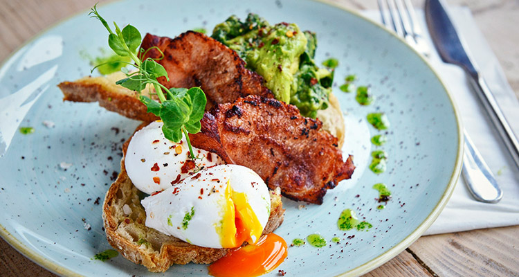

Avocabros

Blixen
Blixen is a hidden gem in Central London. Located on the edge of Old Spitalfields Market in a converted bank, Blixen is a restaurant in the style of the European grand cafés, with a focus on beautiful design, consistent quality and the true spirit of hospitality.
Address : 65A Brushfield St, London E1 6AA
Brunch Availability : Saturday 10am - 3.30pm and Sunday 10am - 4pm